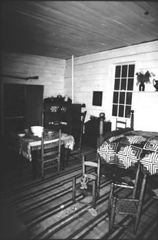

Inside Clemens's Birthplace

picture
courtesy of Mark Twain State Historic Site
"He [Clemens's
father] gathered together his household and journeyed many
tedious days through wilderness
solitudes toward what was then the 'Far West' and at last pitched his
tent in the little town of Florida, Missouri.
He 'kept store' there several years but had no luck, except that I was
born to him." Autobiography, 25
back
to exterior